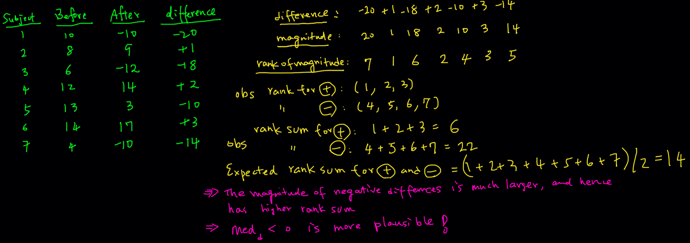

22 Nonparametric Tests
In this chapter we are going to learn some nonparametric testing methods. In general, nonparametric methods do not require that samples come from population with normal distributions or any other particular distributions. Nonparametric methods are distribution-free methods.
Because nonparametric methods have less rigid requirements than parametric methods, usually they can be applied to wider variety of situations. However, nonparametric methods usually need stronger evidence such as larger sample or greater group mean difference to have the same performance as their parametric equivalent methods used for the same purpose. Therefore, the bottom line is, it’s generally better to use the parametric methods when their required assumptions are satisfied. If we have no idea of what the population distribution or sampling distribution looks like, we consider using nonparametric methods.
Here we introduce three nonparametric tests. Note that nonparametric methods are much more than testing, and nonparametric statistics is one of the popular research area of statistics. It is also discussed as a one-semester course at many colleges.
22.1 Wilcoxon Signed-Rank Test for Matched Pairs
The Wilcoxon sign-rank test is a nonparametric test that uses ranks for the following tests:
Testing the claim that a population of matched pairs has the property that the matched pairs have differences with a median equal to zero.
Testing the claim that a single population of individual values has a median equal to some claimed value.
Therefore, the Wilcoxon sign-rank test can be used for one or paired samples. When comparing matched pairs, the Wilcoxon sign-rank test is the nonparametric version of the paired \(t\)-test.
Here we talk about the procedure for matched pairs, The same procedure is used for the one population case by creating matched pairs by pairing each sample value with the claimed median.
The requirements of the Wilcoxon sign-rank test are
- The data are (simple) random samples.
- The population distribution of differences is approximately symmetric about the unknown median.
There is no requirement that the data have a normal distribution.
Keep in mind that instead of testing the mean of differences, the Wilcoxon signed-rank test tests the median of the differences (\(med_d\)).
22.1.1 Idea of Wilcoxon Signed-Rank Test
The hypothesis is
- \(H_0: med_d = 0\) (median of the difference = 0)
- \(H_1: med_d > 0\) or \(med_d < 0\) or \(med_d \ne 0\)
The first thought is that If the median of the differences is 0, we expect to see about half of the differences \(d_1, \dots, d_n\) is negative (\(-\)), and the other half of differences is positive (\(+\)). But this sign test uses only the information about direction (sign) of the data, and ignores the magnitude of the differences.
The following example demonstrates that relying solely on the signs of differences to determine whether the median is zero can be misleading. Consider the paired data presented on the left. As with the two-sample paired \(t\) test, we first calculate the differences between the paired observations. Next, we count the number of positive and negative differences. In this case, we have 3 positive differences \((+1, +2, +3)\) and 4 negative differences \((-20, -18, -10, -14)\). Since the number of positive signs is roughly equal to the number of negative signs, one might hastily conclude that the median of the differences is 0. However, this conclusion ignores the magnitude of the differences, which could lead to an incorrect inference.
However, if we examine the difference data more closely, we notice that the positive differences have relatively small magnitudes, while the negative differences have much larger magnitudes. This observation suggests that the median of the differences is likely to be negative, contrary to what the simple count of positive and negative signs might indicate.
As a result, the core idea behind the Wilcoxon Signed-Rank Test is that if the median of the differences is indeed 0, not only should the number of positive differences be roughly equal to the number of negative differences, but also the rank sum of the positive differences should be close to the rank sum of the negative differences. This approach takes into account both the number and the magnitude of the differences, providing a more accurate assessment of whether the median is truly zero.
The figure below illustrates the concept behind the Wilcoxon Signed-Rank test. After calculating the difference data, we take the absolute values of these differences to determine their magnitudes. Next, we rank these magnitudes from smallest to largest, with the smallest magnitude receiving the first rank, the next smallest receiving the second rank, and so on.
Once the ranks are assigned, we calculate the rank sum. For the positive differences, the ranks are 1, 2, and 3, resulting in a rank sum of 6. For the negative differences, the ranks are 4, 5, 6, and 7, leading to a rank sum of 22. If the median of the differences were zero, these two rank sums should be fairly close to each other, ideally around half of the total rank sum, which is \((1 + 2 + 3 + \cdots + 7)/2 = 14\).
However, in this case, the larger rank sum for the negative differences suggests that the median is likely negative. Whether this difference in rank sums is significant enough to reject the null hypothesis depends on the test statistic, critical value, or p-value obtained through a formal testing procedure, which is typically handled by statistical software nowadays. The details are skipped here, and you can explore more from other introductory statistics textbooks.

The entire procedure of Wilcoxon signed-rank test when \(n\) is small (\(< 50\)) is summarized below.
-
The hypothesis is
- \(H_0: med_d = 0\) (median of the difference = 0)
- \(H_1: med_d > 0\) or \(med_d < 0\) or \(med_d \ne 0\)
Step 1: Calculate the differences (\(d_i\)s) in the \(n\) pairs of observations.
Step 2: Delete all zero values of \(d_i\).
Step 3: Rank the absolute values (magnitude) of the differences.
Step 4: Compute the rank sums for positive and negative differences, \(T_+\) and \(T_{-}\).
Step 5: Let the test statistic \(T_{test}\) be the smaller of \(T_+\) and \(T_{-}\).
Step 6: Given \(\alpha\) and \(n\), find the critical value \(T_{crit}\). Or find the p-value.
Step 7: Reject \(H_0\) if \(T_{test} < T_{crit}\) or p-value < \(\alpha\).
When \(n\) is relatively large, say larger than 50, we can transform \(T_{test}\) into a \(z\) test statistic, and follow the ordinary testing procedure using the standard normal distribution. The entire procedure is shown below.
Step 1: Calculate the differences (\(d_i\)s) in the \(n\) pairs of observations.
Step 2: Delete all zero values of \(d_i\).
Step 3: Rank the absolute values (magnitude) of the differences.
Step 4: Compute the rank sums for positive and negative differences, \(T_+\) and \(T_{-}\).
Step 5: Let \(T\) be the smaller of \(T_+\) and \(T_{-}\).
Step 6: Compute the test statistic \(z_{test} = \frac{T - \frac{n(n+1)}{4}}{\sqrt{\frac{n(n+1)(2n+1)}{24}}}\).
Step 7: Given \(\alpha\), find the critical value \(z_{\alpha}\) (one-tailed) or \(z_{\alpha/2}\) (two-tailed).
-
Step 8: Decision Rule
\(H_1: med_d > 0\): Reject \(H_0\) if \(z_{test} < -z_{\alpha}\) .
\(H_1: med_d < 0\): Reject \(H_0\) if \(z_{test} < -z_{\alpha}\) .
\(H_1: med_d \ne 0\): Reject \(H_0\) if \(z_{test} < -z_{\alpha/2}\) .
22.2 Example of Wilcoxon Signed-Rank Test (Example 6.9 of SMD)
A city park department compared a new formulation of a fertilizer, brand A, to the previously used fertilizer, brand B, on each of 20 different softball fields. Each field was divided in half, with brand A randomly assigned to one half of the field and brand B to the other. Sixty pounds of fertilizer per acre were then applied to the fields. The effect of the fertilizer on the grass grown at each field was measured by the weight (in pounds) of grass clippings produced by mowing the grass at the fields over a 1-month period. Evaluate whether brand A tends to produce more grass than brand B.
We will perform the Wilcoxon signed-rank test using R. First we prepare the data set paired_data in R like this:
Field a b difference
1 1 211.4 186.3 25.1
2 2 204.4 205.7 -1.3
3 3 202.0 184.4 17.6
4 4 201.9 203.6 -1.7
5 5 202.4 180.4 22.0
6 6 202.0 202.0 0.0
7 7 202.4 181.5 20.9
8 8 207.1 186.7 20.4
9 9 203.6 205.7 -2.1
10 10 216.0 189.1 26.9
11 11 208.9 183.6 25.3
12 12 208.7 188.7 20.0
13 13 213.8 188.6 25.2
14 14 201.6 204.2 -2.6
15 15 201.8 181.6 20.2
16 16 200.3 208.7 -8.4
17 17 201.8 181.5 20.3
18 18 201.5 208.7 -7.2
19 19 212.1 186.8 25.3
20 20 203.4 182.9 20.5The command wilcox.test() can perform the Wilcoxon signed-rank test. The arguments x and y are the paired data from Brand A and Brand B, respectively. By default, paired = FALSE. So we have to set paired = TRUE because we have matched pairs data. We set alternative = "greater" because we would like to know whether brand A (in x) tends to produce more grass than brand B (in y). Here mu is actually referred to median, not the mean.
By default, when \(n < 50\) and the difference data have no zero values, the exact p-value and confidence interval are constructed, i.e., the first procedure before is used. When \(n > 50\), wilcox.test() will compute the p-value and confidence interval based on normal approximation, like the second procedure shown before. When normal approximation is used, correct argument is be further specified to decide whether continuity correction is used.
Warning
The x and y data should be consistent with alternative. If we put paired_data$b in the x argument, and paired_data$a in the y argument, then alternative = "less" should be set. The order matters.
Our dataset consists of 20 observations, but it’s important to note that we have a tie in the sixth observation where brand A and brand B have the same measurements. If you do not specify exact=TRUE in the function, R will issue a warning and automatically use the normal approximation with continuity correction. The following two code snippets will produce the same result.
wilcox.test(x = paired_data$a, y = paired_data$b, mu = 0,
alternative = "greater", paired = TRUE, conf.int = TRUE)Warning in wilcox.test.default(x = paired_data$a, y = paired_data$b, mu = 0, :
cannot compute exact p-value with zeroesWarning in wilcox.test.default(x = paired_data$a, y = paired_data$b, mu = 0, :
cannot compute exact confidence interval with zeroes
Wilcoxon signed rank test with continuity correction
data: paired_data$a and paired_data$b
V = 169, p-value = 0.001549
alternative hypothesis: true location shift is greater than 0
95 percent confidence interval:
9.049985 Inf
sample estimates:
(pseudo)median
12.12435 wilcox.test(x = paired_data$a, y = paired_data$b, mu = 0,
alternative = "greater", paired = TRUE, conf.int = TRUE,
exact = FALSE, correct = TRUE)
Wilcoxon signed rank test with continuity correction
data: paired_data$a and paired_data$b
V = 169, p-value = 0.001549
alternative hypothesis: true location shift is greater than 0
95 percent confidence interval:
9.049985 Inf
sample estimates:
(pseudo)median
12.12435 If we remove the sixth observation, the exact p-value and confidence interval can be constructed. In the following examples, the first two code chunks will yield the same result, both utilizing the exact p-value. However, the third code chunk, with exact = FALSE, will use the normal approximation to calculate the p-value instead.
paired_data <- paired_data[-6, ]
wilcox.test(x = paired_data$a, y = paired_data$b, mu = 0,
alternative = "greater", paired = TRUE, conf.int = TRUE)
Wilcoxon signed rank exact test
data: paired_data$a and paired_data$b
V = 169, p-value = 0.0008469
alternative hypothesis: true location shift is greater than 0
95 percent confidence interval:
9.05 Inf
sample estimates:
(pseudo)median
12.075 wilcox.test(x = paired_data$a, y = paired_data$b, mu = 0,
alternative = "greater", paired = TRUE, conf.int = TRUE,
exact = TRUE)
Wilcoxon signed rank exact test
data: paired_data$a and paired_data$b
V = 169, p-value = 0.0008469
alternative hypothesis: true location shift is greater than 0
95 percent confidence interval:
9.05 Inf
sample estimates:
(pseudo)median
12.075 wilcox.test(x = paired_data$a, y = paired_data$b, mu = 0,
alternative = "greater", paired = TRUE, conf.int = TRUE,
exact = FALSE)
Wilcoxon signed rank test with continuity correction
data: paired_data$a and paired_data$b
V = 169, p-value = 0.001549
alternative hypothesis: true location shift is greater than 0
95 percent confidence interval:
9.049985 Inf
sample estimates:
(pseudo)median
12.12435 As the sample size increases, the exact p-value and confidence interval will become increasingly similar to those obtained using the normal approximation.
22.3 Wilcoxon Rank-Sum Test (Mann-Whitney U Test)1 for Two Independent Samples
Wilcoxon rank-sum test is the nonparametric version of the independent two-sample \(t\)-test. The only requirementof this method is that the two independent samples are random samples.2 The two populations can be non-normal and follow any distribution.
Like Wilcoxon signed-rank test, instead of comparing two means, the Wilcoxon rank-sum test compares two medians (\(med\)). The figure below shows two non-normal distributions with different median values.
22.3.1 Idea of Wilcoxon Rank-Sum Test
The Wilcoxon rank-sum test uses ranks of sample data from two independent populations to test the null hypothesis that two independent samples come from populations with equal medians. Symbolically we write our \(H_0\) and \(H_1\) as follows.
- \(H_0: med_1 = med_2\)
- \(H_1: med_1 > med_2\) or \(med_1 < med_2\) or \(med_1 \ne med_2\)
The idea is that if the two samples are from the distributions with the same median value, then if we combine the two samples into one big sample, and all sample values are ranked, the high and low ranks should fall evenly between the two samples.
Check my hand-written example below. If the true medians are such that \(med_1 \ne med_2\), the two distributions (green and yellow) will generally not be closely located.. Suppose we have 5 data values from each population, \((x_1, \dots, x_5)\) for the green distribution, and \((y_1, \dots, y_5)\) for the yellow distribution. We can combine the \(x\) and \(y\) samples, and rank all 10 value from smallest to largest. This ranking helps us compare the positions of the green and yellow sample values within the combined dataset, providing insight into the relationship between the two distributions.
In this example, all \(x\) values are smaller than the \(y\) values, so so the ranks 1st through 5th belong to the \(x\) sample, while the \(y\) values are ranked 6th through 10th. When we calculate the rank sum for each group, the \(x\) sample has rank sum of 15 and the \(y\) sample has rank sum of 40. These two rank sums are significantly different from each other.
When the two distributions are far apart or their medians differ greatly, the sample values from one population will generally be smaller (or larger) than those from the other, leading to a large difference in rank sums. This difference in rank sums forms the basis for inferring whether the two medians are equal or not. By examining the gap between the two rank sums, we can draw conclusions about the relationship between the medians of the two populations.
What if \(med_1 = med_2\)? Now consider the example below, where again we have two populations—green and yellow. Although their shapes differ, they share the same median value, and the two distributions are more or less aligned in the same position. As a result, the \(x\) and \(y\) samples generated from these two populations will have fairly similar values.
When we combine the two samples and rank the data values from smallest to largest, the ranks are interspersed between the two samples. Specifically, the \(x\) sample has ranks 1, 3, 6, 8, and 10, while the \(y\) sample has ranks 2, 4, 5, 7, and 9. In this scenario, a data value from one population is just as likely to be greater than or smaller than a data value from the other population.
When we calculate the rank sum for each group, the two rank sums will not differ significantly. The Wilcoxon rank-sum test uses a threshold to determine how large the difference between the two rank sums needs to be in order to conclude that there is sufficient evidence to claim the two medians are different. If the rank sums are close, as in this example, it suggests that the medians are likely equal. Conversely, a large gap in rank sums would indicate a difference in medians.
The procedures for conducting the Wilcoxon rank-sum test differ slightly depending on whether the sample size is small or large. For large samples, the normal approximation is used. While the specific details of the method can be complex, understanding the underlying concept is more important. In practice, the Wilcoxon rank-sum test is typically performed using statistical software, which handles the computations for both small and large sample scenarios.
-
Procedure of Wilcoxon Rank-Sum Test When \(\small n_1 \le 10\) and \(\small n_2 \le 10\)
Step 1: Combine the two samples into one big sample.
Step 2: Find the test statistic, \(T_{test}\), the sum of the ranks for the observations from population 1.
Step 3: Find the critical values, \(T_U\) and \(T_L\).
-
Step 4: Decision Rule
\(H_1: med_1 > med_2\): Reject \(H_0\) if \(T_{test} > T_U\)
\(H_1: med_1 < med_2\): Reject \(H_0\) if \(T_{test} < T_L\)
\(H_1: med_1 \ne med_2\): Reject \(H_0\) if \(T_{test} < T_L\) or \(T_{test} > T_U\)
-
Procedure of Wilcoxon rank-sum test When \(\small n_1 > 10\) and \(\small n_2 > 10\)
Step 1: Combine the two samples into one big sample.
Step 2: Find the test statistic, \(z_{test} = \frac{T - \mu_T}{\sigma_T}\), where \(R\) is the sum of the ranks for the observations from population 1, \(\mu_T = \frac{n_1(n_1+n_2+1)}{2}\), \(\sigma_T = \sqrt{\frac{n_1n_2(n_1+n_2+1)}{12}}\).
Step 3: Find the critical value \(z_{\alpha}\) (one-tailed) or \(z_{\alpha/2}\) (two-tailed).
-
Step 4: Decision Rule
\(H_1: med_1 > med_2\): Reject \(H_0\) if \(z_{test} \ge z_{\alpha}\)
\(H_1: med_1 < med_2\): Reject \(H_0\) if \(z_{test} \le -z_{\alpha}\)
\(H_1: med_1 \ne med_2\): Reject \(H_0\) if \(|z_{test}| \ge z_{\alpha/2}\)
22.4 Example of Wilcoxon Rank-Sum Test (Example 6.5 of SMD)
Many states are considering lowering the blood-alcohol level at which a driver is designated as driving under the influence (DUI) of alcohol. An investigator for a legislative committee designed the following test to study the effect of alcohol on reaction time. Ten participants consumed a specified amount of alcohol. Another group of 10 participants consumed the same amount of a nonalcoholic drink, a placebo. The two groups did not know whether they were receiving alcohol or the placebo. The 20 participants’ average reaction times (in seconds) to a series of simulated driving situations are saved in two_sample_data in R shown below. Does it appear that alcohol consumption increases reaction time?
Placebo Alcohol
1 0.90 1.46
2 0.37 1.45
3 1.63 1.76
4 0.83 1.44
5 0.95 1.11
6 0.78 3.07
7 0.86 0.98
8 0.61 1.27
9 0.38 2.56
10 1.97 1.32To perform the Wilcoxon rank-sum test, we again use the function wilcox.test(). This time paired = FALSE should be used because we are dealing with two independent samples. In this example, the sample size is 10, so we can consider using the small-size procedure. In R, we set exact = TRUE.
wilcox.test(x = two_sample_data$Placebo, y = two_sample_data$Alcohol, mu = 0,
alternative = "less", paired = FALSE, conf.int = TRUE,
exact = TRUE)
Wilcoxon rank sum exact test
data: two_sample_data$Placebo and two_sample_data$Alcohol
W = 15, p-value = 0.003421
alternative hypothesis: true location shift is less than 0
95 percent confidence interval:
-Inf -0.37
sample estimates:
difference in location
-0.61 We could still use the normal approximation that is mainly for studies with a large sample size, like the the following code chunk is doing. The two results are different, and since the sample size is small, the first approach is preferred.
wilcox.test(x = two_sample_data$Placebo, y = two_sample_data$Alcohol, mu = 0,
alternative = "less", paired = FALSE, conf.int = TRUE,
exact = FALSE)
Wilcoxon rank sum test with continuity correction
data: two_sample_data$Placebo and two_sample_data$Alcohol
W = 15, p-value = 0.004554
alternative hypothesis: true location shift is less than 0
95 percent confidence interval:
-Inf -0.3699702
sample estimates:
difference in location
-0.6100186 22.5 Kruskal-Wallis Test for Three or More Samples
Kruskal-Wallis test is for comparing three or more samples. We discuss it in Chapter 23.
Wilcoxon rank-sum test and Mann-Whitney U test are equivalent. Although the two methods construct a different test statistic, they both apply to the same situations and always lead to the same conclusions.↩︎
When either one or both samples have 10 or fewer values, some extra steps are needed. We don’t need to worry about that at the moment.↩︎